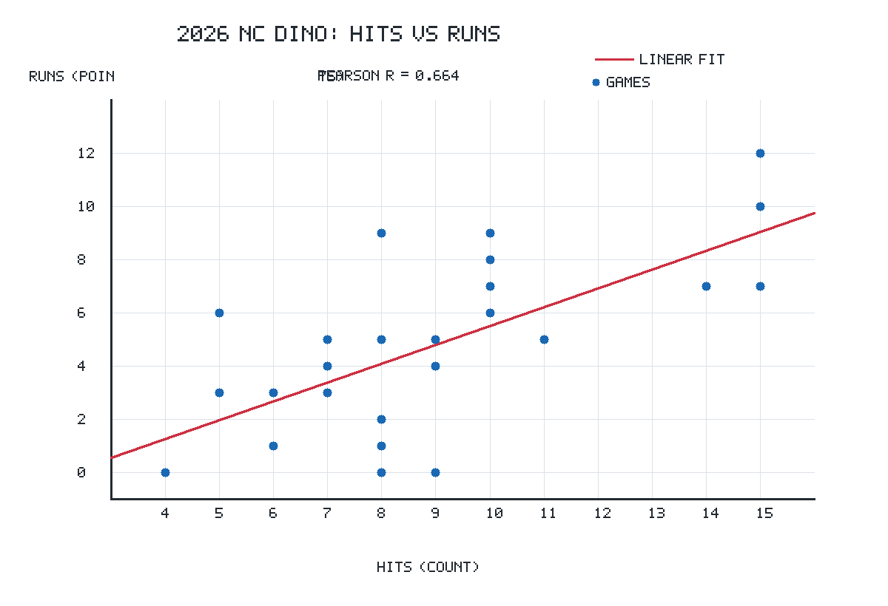

안타가 많으면 반드시 이길까?
단순히 안타(Hits)가 많이 나온다고 해서 팀이 반드시 승리할까? 야구의 공격 지표(안타, 볼넷, 홈런)와 수비 지표(실점, 실책)가 최종 경기 승패와 득실차에 미치는 복합적 상관구조를 규명하기 위한 중간고사 연구 설계 및 데이터 분석 계획입니다.
2장. 이전 과제 실제 분석 결과와 확장 동기
"30경기에서 r = 0.664의 양의 상관관계 확인 — 왜 득점 단일 지표를 넘어 다변수 연구로 확장하는가?"
data/nc_30games.csv 30경기 데이터 전수 검증 통과 (이상치 0건, 결측치 0건)

analysis/scatter.png)
-
1. 잔루(LOB)와 득점 효율의 역설:
동일하게 8안타를 친 경기에서도 0득점(잔루 속출)과 9득점(적시타 폭발)으로 결과가 극단적으로 갈렸습니다. 안타 수만으로는 설명되지 않는 '득점 전환 효율'의 규명이 필요합니다. -
2. 수비 지표의 결정적 영향력:
아무리 득점을 많이 뽑아내도(예: 8득점) 실점이 더 많으면 패배합니다. 최종 승패를 결정짓는 핵심이 '공격의 파괴력'인지 '수비·실점 억제력'인지 균형 잡힌 검증이 필요합니다. -
3. 단편적 2변수에서 다변수 분석체계로:
안타와 득점의 단순 관계를 넘어, 홈런·볼넷·실책·득실차를 결합한 입체적 상관구조를 밝혀 팀 승리 공식을 도출하고자 합니다.
data/nc_30games.csv (30경기, 결측치 0, 중복 0, z-점수 초과 0)3장. 연구 목적과 분석 범위
"야구 승리의 진정한 동인은 무엇인가? 공격과 수비의 균형적 기여도를 규명하는 탐색적 분석 계획"
안타(H)의 양적 생산이 실제 득점(R)으로 연결되는 전환 효율을 파악하고, 홈런(HR)의 장타력과 볼넷(BB)의 출루력이 득점에 미치는 상대적 상관 강도를 비교합니다.
공격 지표(득점)와 수비 지표(실점, 실책) 중 경기 승패(Win/Loss) 및 득실차(Run Diff)와 더 밀접한 상관을 보이는 요인이 무엇인지 정량적으로 평가합니다.
홈 경기(창원 NC파크)와 원정 경기 환경 간에 공격 지표와 승패 상관계수에 통계적으로 유의미한 구조적 편차가 발생하는지 비교 분석합니다.
• 대상: 2026 KBO 정규시즌 NC 다이노스 경기 데이터
• 1차 파일럿: 날짜순 30경기 (개막전 3.28 ~ 5.3) 탐색 완료
• 2차 확장: KBO 공식 전수 144경기 (64승 78패 2무) 확장 계획 수립
• 본 발표는 최종 분석 결과 보고서가 아닌 중간고사 연구 주제 설명 및 분석 계획입니다.
• 상관관계(Correlation)를 인과관계(Causation)로 과잉 해석하지 않으며, 가설 검증 절차를 엄격히 준수합니다.
4장. 4대 핵심 연구 질문 (Research Questions)
"선입견을 배제하고 데이터로 실증할 4가지 핵심 연구 과제"
공격 지표와 득점의 상관관계
"안타(H), 홈런(HR), 볼넷(BB) 중 팀 득점(R)과 가장 높은 선형 상관관계를 가지는 공격 지표는 무엇인가?"
단순한 안타의 양적 생산과 홈런의 한 방, 볼넷의 출루 기여도 중 어느 변수가 득점 분산을 가장 잘 설명하는지 비교합니다.
수비 지표와 승패의 관계
"실점(RA)과 실책(E)은 경기 승패(W/L) 및 득실차(Diff)와 얼마나 강한 음의 상관을 보이는가?"
야구 격언인 "공격은 팬을 부르고 수비는 승리를 부른다"가 2026 NC 다이노스 데이터에서도 유의미하게 성립하는지 검증합니다.
안타당 득점 효율 (R/H)
"안타당 득점(R/H, 단 H > 0) 효율 지표는 승리 경기와 패배 경기에서 뚜렷한 분포 차이를 나타내는가?"
안타가 적더라도 집중타로 득점 효율을 극대화한 경기와, 안타를 많이 치고도 잔루로 자멸한 경기를 식별합니다.
홈 vs 원정 경기 환경별 편차
"창원 홈경기와 원정 경기 환경 간에 안타-득점 상관계수 및 경기당 득실차에 구조적 차이가 있는가?"
홈구장의 그라운드 특성 및 타자 친화적 환경이 공격 지표와 승패 상관성에 미치는 환경 요인을 분리 탐색합니다.
5장. 데이터 수집 계획 및 출처 비교
"신뢰도 높은 KBO 공식 기록원 데이터를 기반으로 경기별 복합 고유 키를 정의하여 무결성 확보"
| 출처 후보명 | 제공 지표 항목 | 장점 및 특이사항 | 현재 확보 상태 |
|---|---|---|---|
| HARDHIT AI 박스스코어 hardhit.ai |
경기 날짜, 상대팀, 안타(H), 득점(R), 경기 URL | 1차 과제에서 정제 완료, 무결성 100% 검증 | ✔ 30G 수집 완료 |
| KBO 공식 기록실 koreabaseball.com |
경기별 H, R, HR, BB, RA, E, 승패, 구장, 관중 | KBO 공인 데이터, 전수 경기(144G) 커버리지 | ⏳ 2차 전수 수집 계획 |
| KBO STATS / 스탯티즈 statiz.sporki.com |
잔루(LOB), 득점권 타율, 투수 세부 지표(WHIP 등) | 심화 세이버메트릭스 분석 시 보조 지표로 확장 | ⏳ 필요 시 선별 확장 |
더블헤더, 경기 순연 등으로 인한 데이터 혼선을 원천 방지하기 위해 다음 규칙으로 식별 키를 생성합니다:
예시: 20260328_NC_AWAY_OB_0 (2026.03.28 두산전 개막전)
data/nc_30games.csv (30행, 5열)6장. 변수 정의와 분석 설계
"공격, 수비, 결과, 파생 변수의 체계적 정의와 수학적 안전장치(0-Division 방지)"
| 분류 | 변수명 | 기호 / 척도 | 정의 및 범위 |
|---|---|---|---|
| 공격 변수 | 안타, 홈런, 볼넷, 득점 | H, HR, BB, R (비율척도, 정수) |
경기당 생산된 공격 기록 (0 이상 정수) |
| 수비 변수 | 실점, 자책점, 실책 | RA, ER, E (비율척도, 정수) |
상대팀에 허용한 득점 및 수비 실수 |
| 결과 지표 | 경기 승패, 득실차 | Result (명목 0/1) RunDiff (등간 정수) |
승리: 1, 패배: 0 (무승부 분리) 득실차 = R − RA |
| 조건 변수 | 경기 장소 | Venue (명목) | 창원 홈: 1, 원정: 0 |
무안타(No-Hit) 경기 발생 시 0으로 나누기 오류(Division by Zero)를 원천 방지하기 위해 조건식을 적용하여 결측값으로 처리하고 표본 유효수(N)를 별도 집계합니다.
이산형 승패(1/0) 변수의 정보 손실을 보완하여 팀의 경기력 우위를 연속형으로 정량화합니다.
7장. 상관관계 분석 계획 (Pearson & Spearman)
"연속형 변수의 선형성(피어슨)과 순위·이진 지표의 단조성(스피어만)을 상호 보완 적용"
| 비교 항목 | 피어슨 상관계수 (r) | 스피어만 순위상관계수 (ρ) |
|---|---|---|
| 기본 가정 | 정규분포 및 선형성(Linearity) | 비모수적, 단조성(Monotonicity) |
| 적용 지표 | 안타-득점, 득점-실점, 득실차 | 승패(1/0), 실책 순위, 극단치 경기 |
| 이상치 민감도 | 이상치에 크게 왜곡될 수 있음 | 순위 기반이므로 이상치에 강건함 |
| 산출 목적 | 단위당 선형 한계 증가율 측정 | 전반적인 순위 일치도 및 경향성 |
경기 득점과 득실차처럼 통계적으로 매우 강한 동조성을 보이는 관계
기존 30경기 안타-득점(r = 0.664)이 속하는 전형적인 양의 상관
볼넷이나 실책 등 단독으로는 영향력이 미약하나 복합 작용하는 관계
직접적인 선형 연관성을 찾기 힘든 지표 관계
8장. 시각화 계획 A: 상관계수 히트맵 & 산점도 매트릭스
"다변수 상관구조를 직관적으로 조망하는 상관 히트맵 및 산점도 매트릭스 인터페이스"
-
실제 데이터 연결 슬롯 1 (안타 vs 득점):
기존 30경기 실제 데이터(r=0.664)를 기반으로 점과 회귀선 렌더링 완료. -
추후 데이터 연결 슬롯 2 (홈런 vs 득점):
장타 1방의 득점 폭발력과 안타 수의 상호작용 검증 예정 [추후 데이터 연결 대기] -
추후 데이터 연결 슬롯 3 (실점 vs 득실차):
실점 억제력이 득실차 마진을 방어하는 결정적 선형 경향 분석 예정 [추후 데이터 연결 대기]
data/nc_30games.csv (실제 데이터 30G 부분만 실측 반영)9장. 시각화 계획 B: 승패별 박스플롯 & 이상 경기 탐색
"승리와 패배의 구조적 분포 차이(IQR) 및 '안타가 많아도 진 경기'의 정밀 원인 분석틀"
안타 ≥ 11개 치고도 패배
원인 가설: 잔루(LOB) 과다, 불펜 방화(RA 급증)
안타 ≤ 5개 이하로 승리
원인 가설: 홈런 집중타, 특급 선발투수 완봉승
10장. 데이터 분석 절차와 무결성 검증 계획
"중복·결측·이상치를 통제하고 소표본 위험을 관리하는 4단계 품질 보증 파이프라인"
중복 및 취소 검증
• 날짜-상대팀-더블헤더 고유키로 1경기 1행 보장
• 우천 취소 및 서스펜디드 경기 분리 처리
결측치 및 타입 검증
• 안타·득점·실점 정수형(≥0) 제약 검사
• 음수 및 문자열 혼입 원천 차단
0-Division 안전망
• 안타당 득점(R/H) 계산 시 안타=0 예외 처리
• 분모 0 에러 방지 조건식 및 유효 표본(N) 집계
이상치(z-score) 점검
• 각 변수별 모집단 표준편차 기반 z-점수 산출
• |z| > 3 초과 극단치 관측 여부 전수 스크리닝
• 표본수 30경기는 중심극한정리에 의해 정규분포 근사가 시작되는 최소 규모이나, 단 1~2개의 극단치 경기(예: 15안타 12득점)에 상관계수(r)가 민감하게 흔들릴 수 있습니다.
• 따라서 특정 변수별 유효 관측치 수($N_{valid}$)를 반드시 표기하여 통계적 왜곡을 방지합니다.
• $N_{H, R} = 30$ (전체 30경기 결측 없음 확인)
• $N_{R/H} = 30$ (기존 30경기 중 무안타 경기 0건, 최소 안타 4개로 전수 계산 가능)
• 144경기 확장 시: 우천 콜드게임 및 무승부(Draw) 경기는 분석 모형별로 별도 필터링
analysis/summary.md 데이터 정제 검증 결과 100% 일치11장. 연구의 한계와 후속 분석 일정
"상관과 인과의 엄격한 구분, 교란요인 통제, 그리고 144경기 전수 데이터 확장 로드맵"
상관관계 ≠ 인과관계
안타 수가 많다고 해서 반드시 득점과 승리의 직접적 원인이라고 단정할 수 없습니다. 사사구(볼넷), 주루 플레이, 상대 실책, 잔루 등의 매개 변수가 개입합니다.
승패와 득실차의 구조적 연동
야구 규칙상 득실차(R - RA > 0)는 승패(Win)와 산술적으로 직결되어 있습니다(다중공선성). 따라서 단순 승패 상관을 넘어 세부 공격/수비 기여도를 분리해야 합니다.
시즌 전체 일반화 불가
기존 30경기는 시즌 전체(144G)의 무작위 표본이 아닌 개막 초반 날짜순 표본이므로, 상대 팀 로테이션 및 봄철 경기력 편향으로 인해 전체 일반화가 제한됩니다.
30경기 안타-득점 수집, r=0.664 도출, 무결성 검증
4대 연구 질문 수립, 다변수 체계화, 발표 슬라이드덱 구축
KBO 공식 144경기 스크래핑 파이프라인 가동 및 DB 적재
다변수 회귀, 박스플롯 실측, 이상 경기 규명, 최종 논문화
12장. 기대효과와 발표 결론 요약
"단순 안타 중심주의를 넘어, 공·수 균형의 경기 승리 방정식을 정립하는 데이터 분석"
2026 NC 다이노스 30경기 분석에서 안타와 득점 사이에 r = 0.664의 뚜렷한 양의 선형 상관관계를 실증 확인했습니다. 안타 생산력은 팀 득점의 핵심 토대입니다.
"안타가 많으면 반드시 이길까?"에 답하기 위해서는 공격 효율(R/H, BB, HR)과 수비 억제력(RA, E)을 종합 결합해야만 승패의 본질을 밝힐 수 있습니다.
가상 데이터와 실제 데이터를 투명하게 구분하고, 상관과 인과의 혼동을 경계하며, KBO 공식 전수 데이터 확장을 통해 신뢰성 높은 야구 데이터 분석 모델을 완성하겠습니다.
본 중간고사 발표자료는 이전 과제의 30경기 분석 결과를 엄격히 계승하면서도, 야구 승패의 다변수적 메커니즘을 탐구하기 위한 연구 질문, 변수 체계, 분석 및 시각화 계획, 품질 보증 절차를 완결성 있게 제시했습니다. 후속 기말 연구를 통해 NC 다이노스의 승리 공식을 완벽히 실증할 것을 약속드립니다.